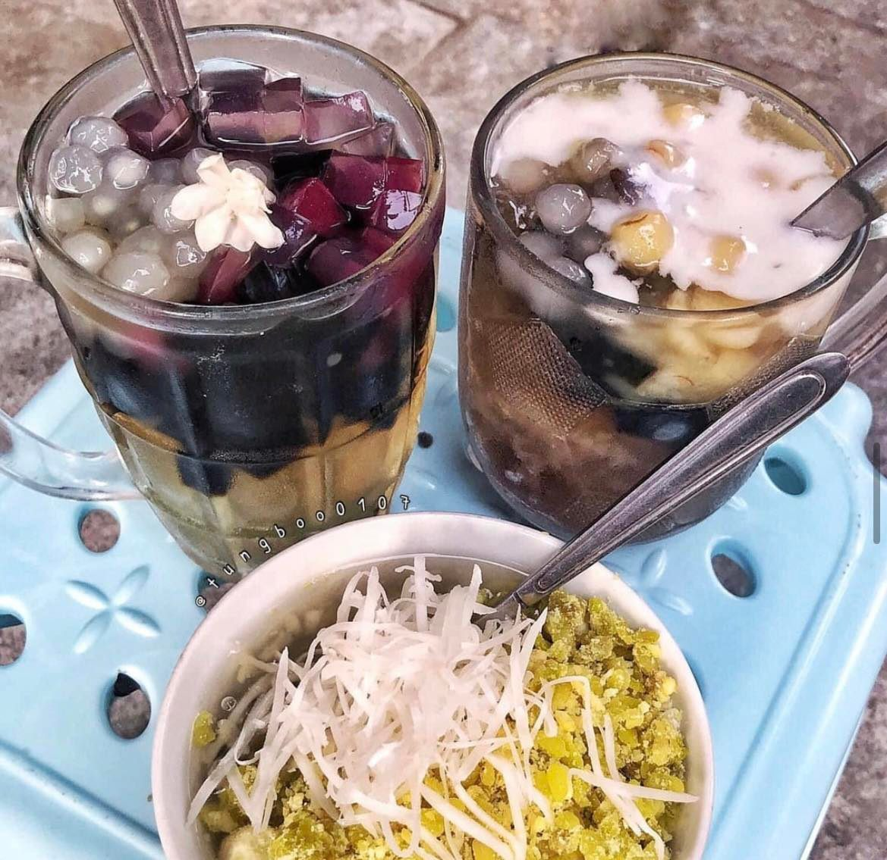
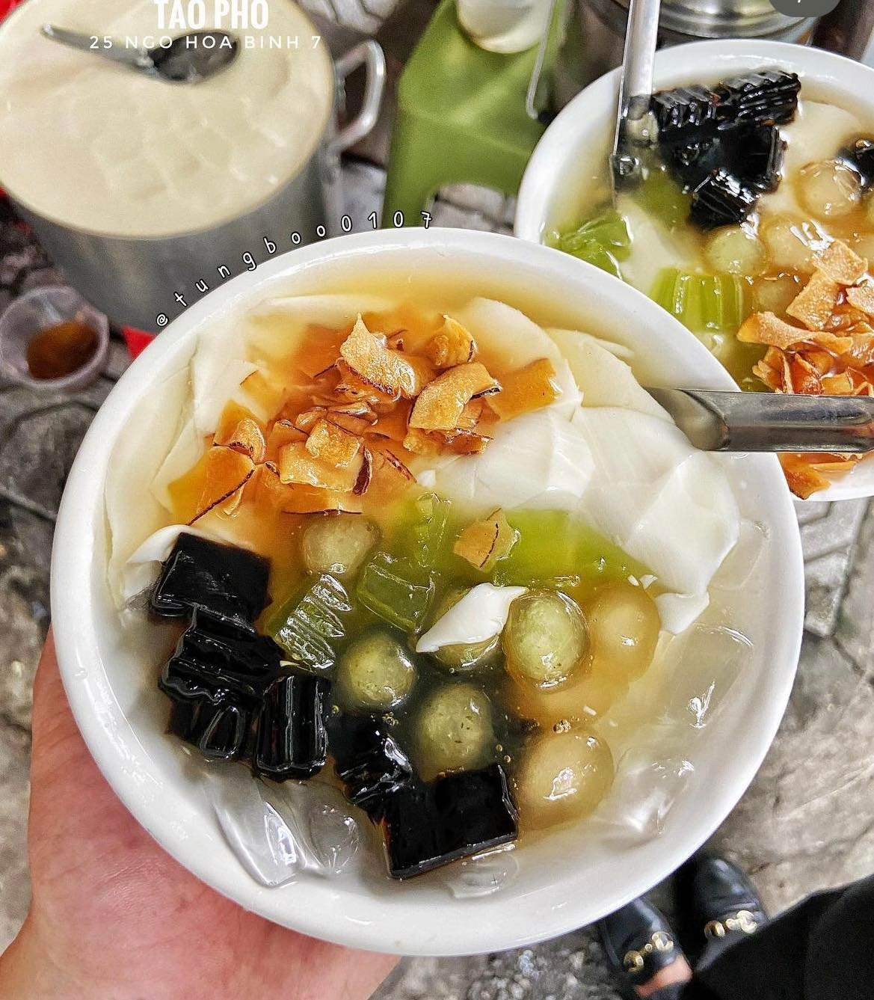
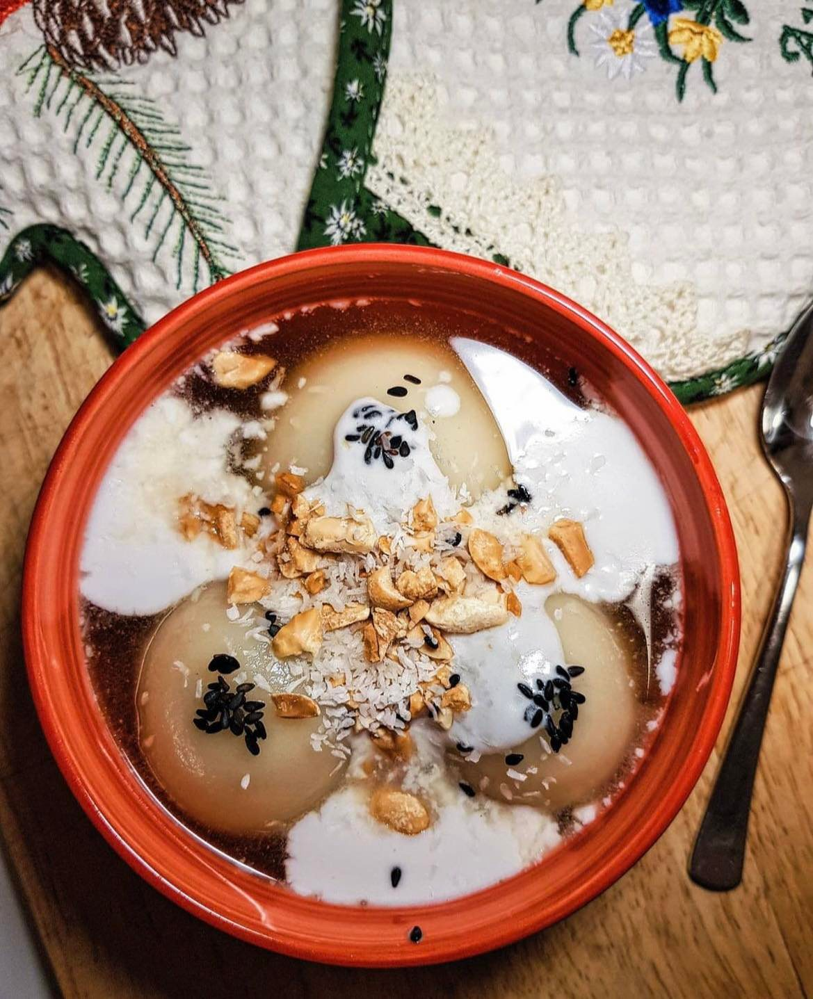
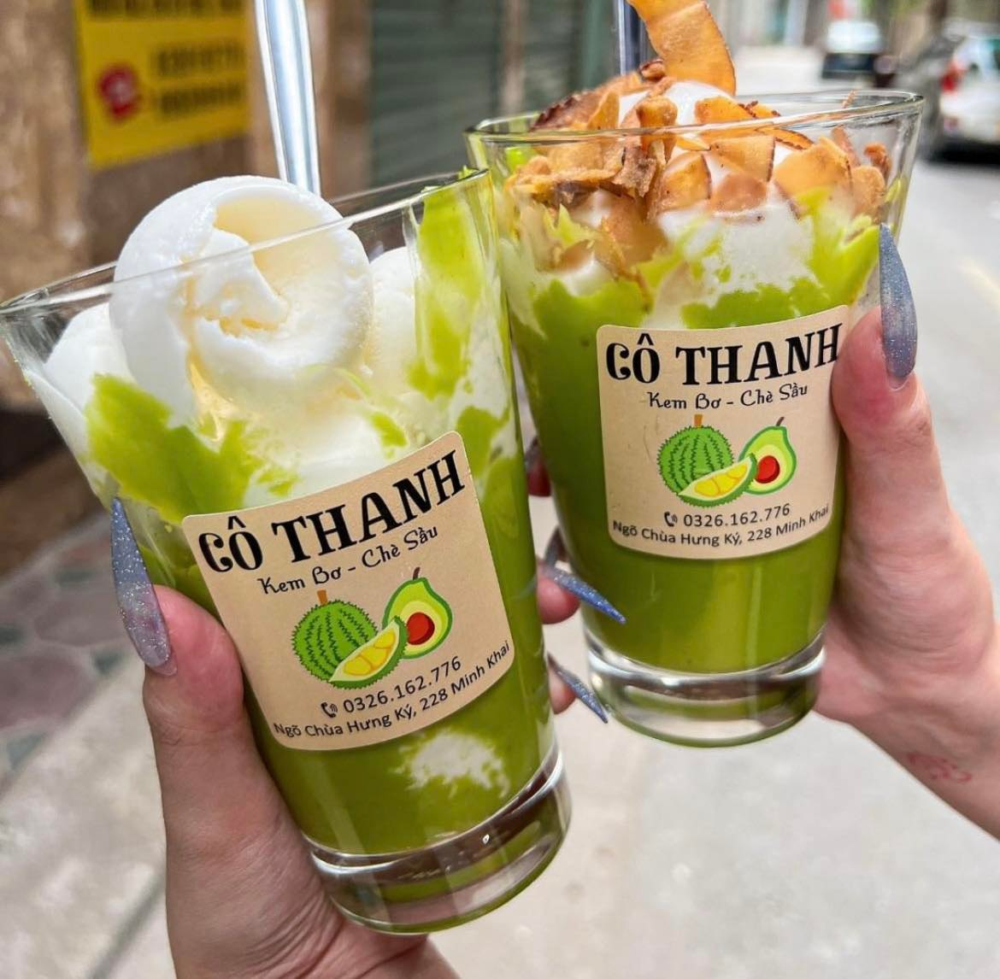
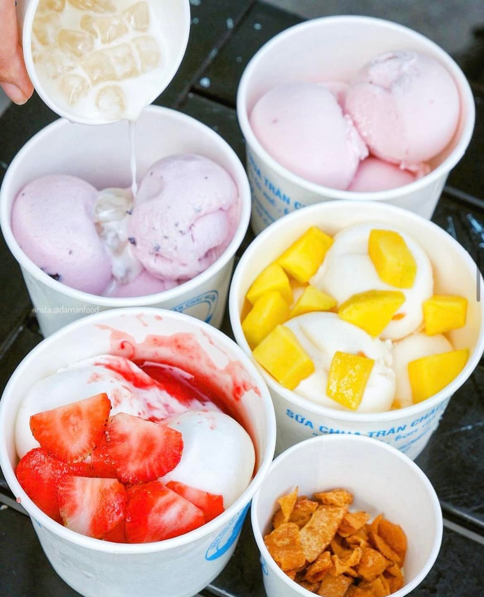

Top 5 desserts in Vietnam you should not miss
Last updated: 7 December 2022Table of Contents
1. Chè
Vietnamese people use the word "Che" to refer to many different types of Che. Che has a sweet taste, a variety of flavors, ingredients such as beans, fruits, jelly, tapioca, nuts, etc. Che can be eaten hot or cold with little shaved ice, or with delicious coconut milk on top.

Whether it's a cold day or a hot summer, having a bowl of che will bring you a feeling of enjoyment. Some common Che dishes: Corn Che, Grapefruit Che, Che Thai, Che Khuc Bach.
2. Tào phớ
Sweet tofu is a dish favoured by many generations because of its cool, sweet taste. It is soft with a fresh aroma, and it can be eaten when even hot or cold. This dish is made from soybeans with ivory white color, cool taste, light aroma, so it is easy to make others fall in love.

Tao pho is soft and melts like jelly, along with ginger sugar water, now usually combined with some chewy pearls, becoming one of the favorite desserts in many Asian countries.
3. Bánh trôi tàu
Stuffed sticky rice ball is a dessert orginiated from China. It consists of delicious tiny balls of glutinous rice wrapped around a sweet filling. Two common flavours are green beans and black sesame, served with sugarcane juice cooked with heated ginger and grated coconut.

This rice cake attracts people thanks to its soft. That sweet and a bit spicy taste has penetrated into the base of the tongue and throat, which helps warm up the body and dispels the cold in those winter days.
4. Kem bơ
Vietnamese Avocado Ice Cream dessert is a street food from Danang. This dessert in particular has the combination of smashed avocado, coconut ice cream, and sweetened coconut milk.

There are so many layers of flavors and textures. The smoothness and richness of avocado goes well with a scoop of cold ice cream. The coconut sauce adds silkiness as well as a light coconut fragrance. Kem bơ is definitely a perfect choice for you in a hot summer.
5. Sữa chua
Sữa Chua or yogurt is so familiar with every people around the world. But when trying yogurt in Vietnam, you definitely cannot forget the flavour of it. There are so many flavours of yogurt and toppings added to it depending on your personal preferences.

Bubble yogurt has been so popular in Vietnam in recent years. It is a delicious dessert orginiated from Ha Long. Ha Long people are so clever when combining smooth, cool yogurt with chewy pearls and fragrant coconut milk, creating an attractive flavor that is hard to resist. With the cool flavour and cheap price, it is prefered by a lot of people in Vietnam and around the world.